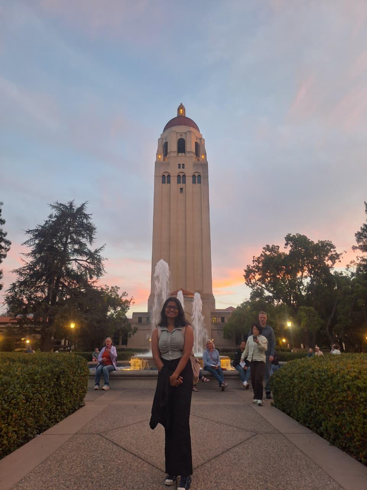

Conferences
Trust and Safety Research Conference
📍 Stanford University, USA
Presented our paper "Deepfakes in the Global South: Understanding Stakeholder Perceptions, Harms, and Governance Challenges in Sri Lanka, India, and Bangladesh" in the session on "Digital Intersectionality in the Majority World."



High-Level Stakeholder Consultation on AI in Policy and Governance
📍 Hilton Colombo, Sri Lanka
Invited participant representing UCSC at a closed-door dialogue under Bridging Borders Through AI, supported by Canada in India, Nepal & Bhutan, with Humber Polytechnic, Canada.
12th Heidelberg Laureate Forum (HLF)
📍Germany
Selected to attend the 12th Heidelberg Laureate Forum (HLF) — a prestigious event bringing together outstanding young researchers in mathematics and computer science with laureates of the Fields Medal, Abel Prize, Abacus Medal, ACM Prize in Computing, and the ACM A.M. Turing Award.

ICWSM 2025 - International AAAI Conference on Web and Social Media
📍Copenhagen, Denmark
Selected and offered AIVO Travel Grant to take part in the conference.
Presented working draft paper under Global Initiative and gain insights on our research work


ACM CHI 2025
📍 Yokohama, Japan
Attended the top-tier venue on Human-Computer Interaction and presented our paper on "Labeling Synthetic Content: User Perceptions of Label Designs for AI-Generated Content on Social Media."
Facilitated the panel discussion hosted by the ACM SIGCHI Asia Subcommittee on “Bridging Gaps in HCI: Advancing Education, Research, and Careers in Asia.